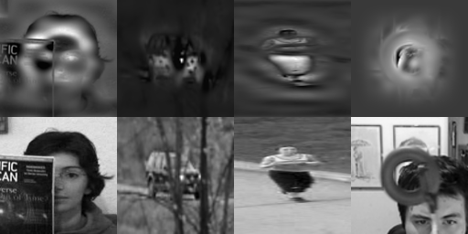
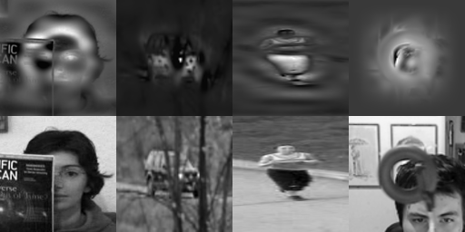
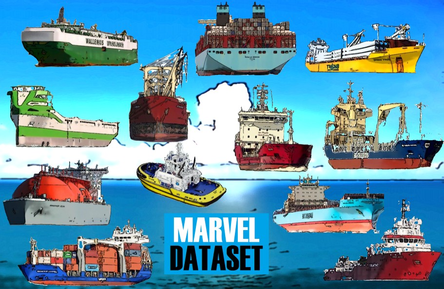

|
I am a Postdoctoral Researcher at Computer Vision Laboratory (CVLAB), École Polytechnique Fédérale de Lausanne (EPFL), where I work on Computer Vision. I received my B.Sc., M.Sc. and Ph.D. at Middle East Technical University, Turkey. During my M.Sc. and Ph.D. studies, I was advised by Prof. Dr. A. Aydın Alatan. |
|
My research interests include but not limited to: Computer vision, deep learning, machine learning, visual object tracking, data association for tracking, fine-grained object recognition, deep metric learning, signal processing and optimization. For my full publication list, please visit my Google Scholar Page. My active interests are Garment virtualization on 3D body shapes (at CVLAB, EPFL), visual object tracking (for my Ph.D. thesis) and fine-grained object recognition (at ASELSAN Research Center, Turkey). |
|
|

|
(ieee.org, arXiv Preprint) Erhan Gundogdu, A. Aydın Alatan IEEE Transactions on Image Processing, 2018 code / bibtex In this work, the problem of learning deep fully convolutional features for the CFB visual tracking is formulated. To learn the proposed model, a novel and efficient backpropagation algorithm is presented based on the loss function of the network. The proposed learning framework enables the network model to be flexible for a custom design. Moreover, it alleviates the dependency on the network trained for classification. The proposed tracking method is the winner of VOT2017 Challenge, organized by IEEE ICCV 2017. |
 

|
Erhan Gundogdu, Huseyin Ozkan, A. Aydın Alatan IEEE Transactions on Image Processing, 2017 Erhan Gundogdu, A. Aydın Alatan IEEE International Conference on Image Processing (ICIP), 2016 Erhan Gundogdu, Huseyin Ozkan, A. Aydın Alatan IEEE International Conference on Advanced Video and Signal-based Surveillance (AVSS), 2016 bibtex In the studies above, we improve upon the conventional correlation filters by proposing two methods. First, we present an approach to learn a spatial window at each frame during the course of the tracking. When the learned window is element-wise multiplied by the object patch/correlation filter, it can suppress the irrelevant regions of the object patch. Second, a tree-structured ensemble of trackers algorithm is proposed to combine multiple correaltion filter-based trackers while hierarchically keeping the appearance model of the object at the tree nodes. At each frame, only the relevant node trackers are activated to be combined as the final tracking decision. The combination of these two approaches also yield a better performance. |
|  |
Erhan Gundogdu, Berkan Solmaz, Veysel Yucesoy, Aykut Koc Asian Conference on Computer Vision, 2016 Berkan Solmaz, Erhan Gundogdu, Veysel Yucesoy, Aykut Koc, A. Aydın Alatan IPSJ Transactions on Computer Vision and Applications, 2017 bibtex / dataset page In the above studies, we first construct a large-scale maritime vessel dataset by distilling 2M annotated vessel images. Based on a semi-supervised clustering scheme, 26 hyper-classes for vessel types are construced. Four potential applications are introduced; namely, vessel classification, verification, retrieval and recognition with their provided baseline results. Furthermore, we attempted interesting problems of visual marine surveillance such as predicting and classifying maritime vessel attributes such as length, summer deadweight, draught, and gross tonnage by solely interpreting the visual content in the wild, where no additional cues such as scale, orientation, or location are provided. By utilizing generic and attribute-specific deep representations for maritime vessels, we obtained promising results for the aforementioned applications. |